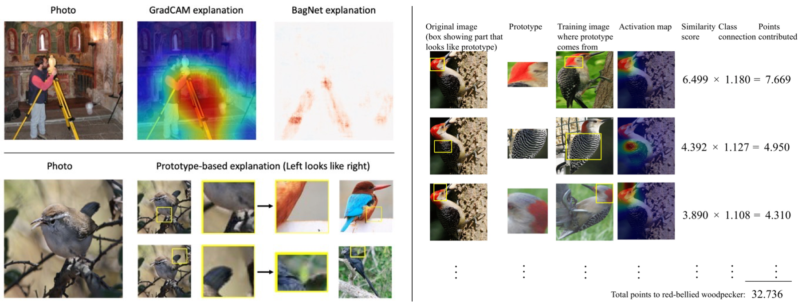
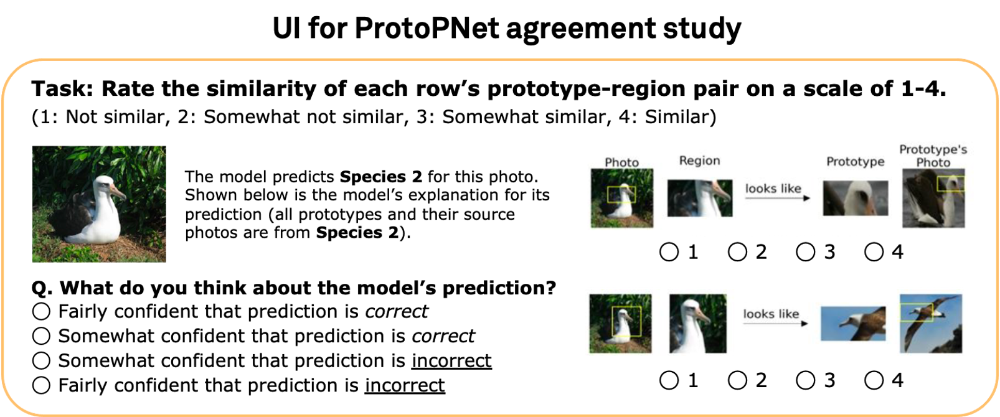
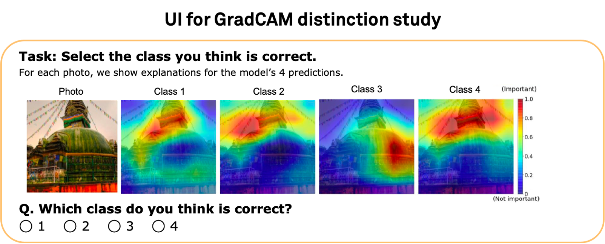
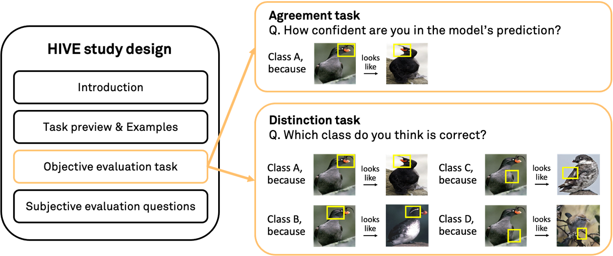

HIVE: Evaluating the Human Interpretability of Visual Explanations

(Top left) Heatmap explanations by GradCAM and BagNet highlight decision-relevant image regions.
(Bottom left) Prototype-based explanations by ProtoPNet and ProtoTree match image regions to prototypical parts learned during training.
This schematic is much simpler than actual explanations.
(Right) Actual ProtoPNet explanation example from the original paper.
While existing evaluation methods typically apply to only one explanation form,
HIVE evaluates and compares diverse interpretability methods.
Abstract
As AI technology is increasingly applied to high-impact, high-risk domains,
there have been a number of new methods aimed at making AI models more human interpretable.
Despite the recent growth of interpretability work, there is a lack of systematic
evaluation of proposed techniques. In this work, we introduce HIVE
(Human Interpretability of Visual Explanations), a novel human evaluation
framework that assesses the utility of explanations to human users in
AI-assisted decision making scenarios, and enables falsifiable hypothesis testing,
cross-method comparison, and human-centered evaluation of visual interpretability methods.
To the best of our knowledge, this is the first work of its kind. Using HIVE, we conduct
IRB-approved human studies with nearly 1000 participants and evaluate four methods
that represent the diversity of computer vision interpretability works: GradCAM, BagNet,
ProtoPNet, and ProtoTree. Our results suggest that explanations engender human trust,
even for incorrect predictions, yet are not distinct enough for users to distinguish
between correct and incorrect predictions. We open-source HIVE to enable future studies
and encourage more human-centered approaches to interpretability research.
Citation
@inproceedings{Kim2022HIVE,
author = {Sunnie S. Y. Kim and Nicole Meister and Vikram V. Ramaswamy and Ruth Fong and Olga Russakovsky},
title = {{HIVE}: Evaluating the Human Interpretability of Visual Explanations},
booktitle = {European Conference on Computer Vision (ECCV)},
year = {2022}
}
HIVE (Human Interpretability of Visual Explanations)
We propose HIVE, a novel human evaluation framework for visual interpretability methods.
Through careful design, HIVE allows for
falsifiable hypothesis testing regarding the utility of explanations for identifying model errors,
cross-method comparison between different interpretability techniques,
and human-centered evaluation for understanding the practical effectiveness of interpretability.
In particular, we focus on AI-assisted decision making scenarios where humans use an AI (image classification) model
and an interpretability method to make decisions about whether the model prediction is correct or more generally
about whether to use the model. We evaluate how useful a given interpretability
method is in these scenarios through the following tasks.

First, we evaluate interpretability methods on a simple agreement task, where we present users with a single
model prediction-explanation pair for a given image and ask how confident they are in the prediction.
This task simulates a common decision making setting and is close to existing evaluation schemes that consider
a model’s top-1 prediction and an explanation for it. See above for the ProtoPNet evaluation UI.

However, it has been previously observed that users tend to believe in model predictions when given explanations for them.
Hence, we evaluate methods on a distinction task to mitigate the effect of such confirmation bias in interpretability evaluation.
Here we simultaneously show four prediction-explanation pairs and ask users to identify the correct prediction based on the
provided explanations. This task measures how well explanations can help users distinguish between correct and incorrect predictions.
See above for the GradCAM evaluation UI.

In summary, HIVE consists of the following steps:
We first introduce the study and the interpretability method to be evaluated.
Next, we show a preview of the evaluation task and provide example explanations
for one correct and one incorrect model prediction to give participants appropriate references.
Afterwards, participants complete the evaluation task.
Throughout the study, we also ask subjective evaluation and user preference questions
to make the most out of the human studies.
Our study design was approved by our university’s Institutional Review Board (IRB).
Key Findings
1. When provided explanations, participants tend to believe that the model predictions are correct, revealing an issue of
confirmation bias.
2. When given multiple model predictions and explanations, participants struggle to distinguish
between correct and incorrect predictions based on the explanations.
This result suggests that interpretability methods need to be improved to be reliably useful for AI-assisted decision making.
3. There exists a gap between the similarity judgments of humans and prototype-based models
which can hurt the quality of their interpretability.
4. Participants prefer to use a model with explanations over a baseline model without explanations.
To switch their preference, they require the baseline model to have +6.2% to +10.9% higher accuracy.
Please see the
full paper for details.
Related Work
Below are some papers related to our work. We discuss them in more detail in the related work section of our paper.
Acknowledgements
This material is based upon work partially supported by the National Science Foundation (NSF)
under Grant No. 1763642. Any opinions, findings, and conclusions or recommendations expressed
in this material are those of the author(s) and do not necessarily reflect the views of the NSF.
We also acknowledge support from the Princeton SEAS Howard B. Wentz, Jr. Junior Faculty Award (OR),
Princeton SEAS Project X Fund (RF, OR), Open Philanthropy (RF, OR), and Princeton SEAS and ECE Senior Thesis Funding (NM).
We thank the authors of [1, 2, 3, 4, 5] for open-sourcing their code and the authors of [2, 4, 5, 6] for sharing their trained models.
We also thank the AMT workers who participated in our studies, anonymous reviewers who provided thoughtful feedback,
and Princeton Visual AI Lab members (especially Dora Zhao, Kaiyu Yang, and Angelina Wang) who tested our user
interface and provided helpful suggestions.